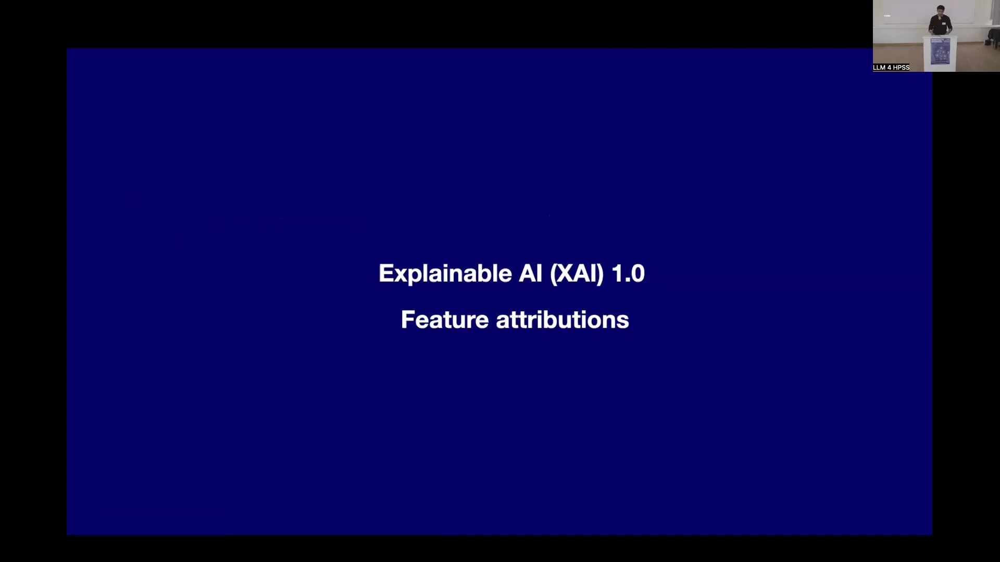
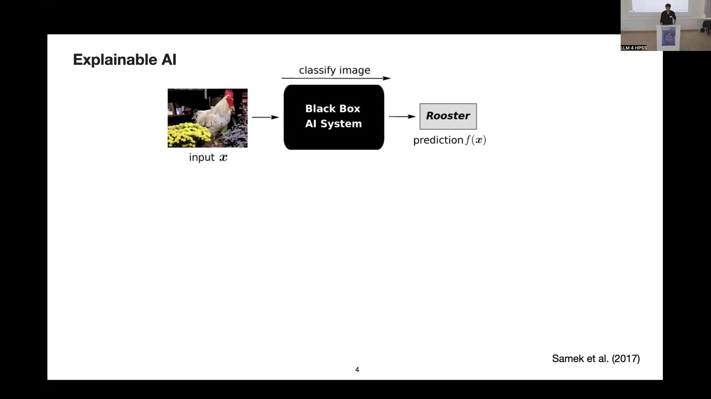
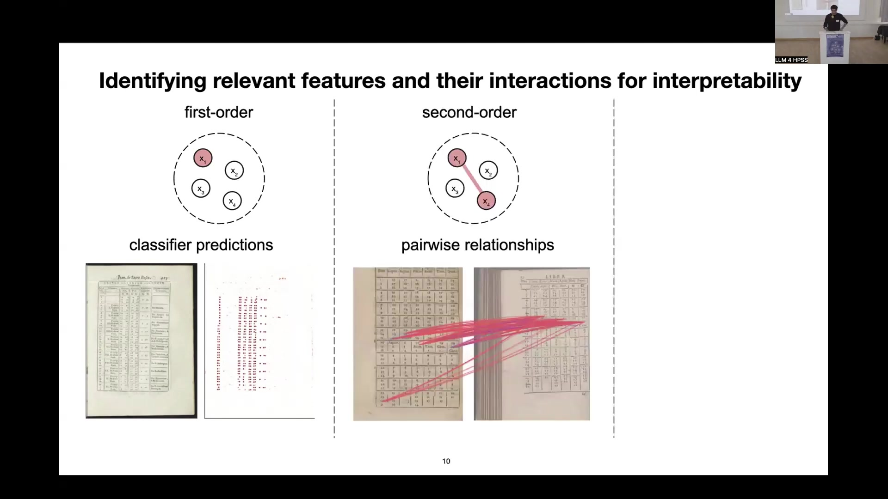
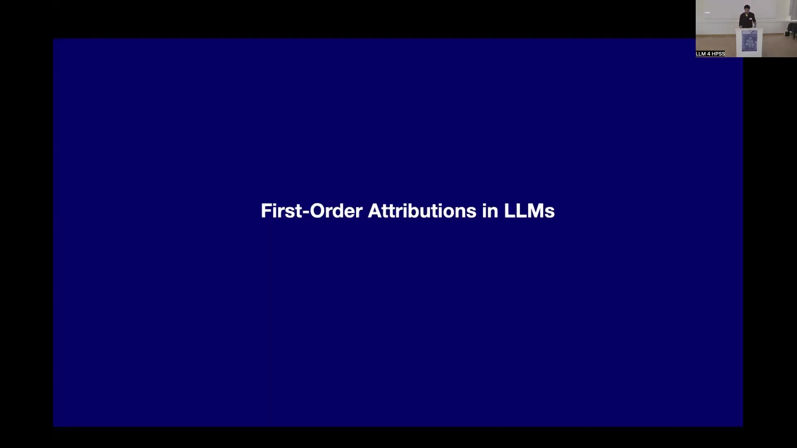
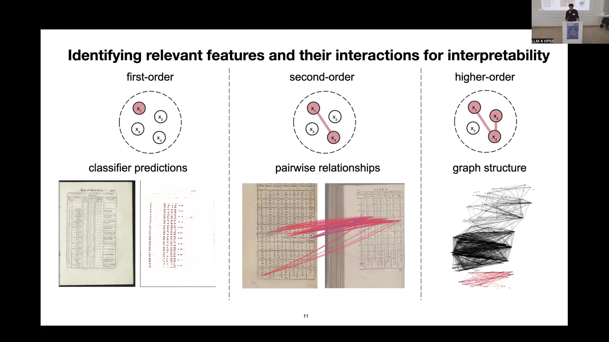
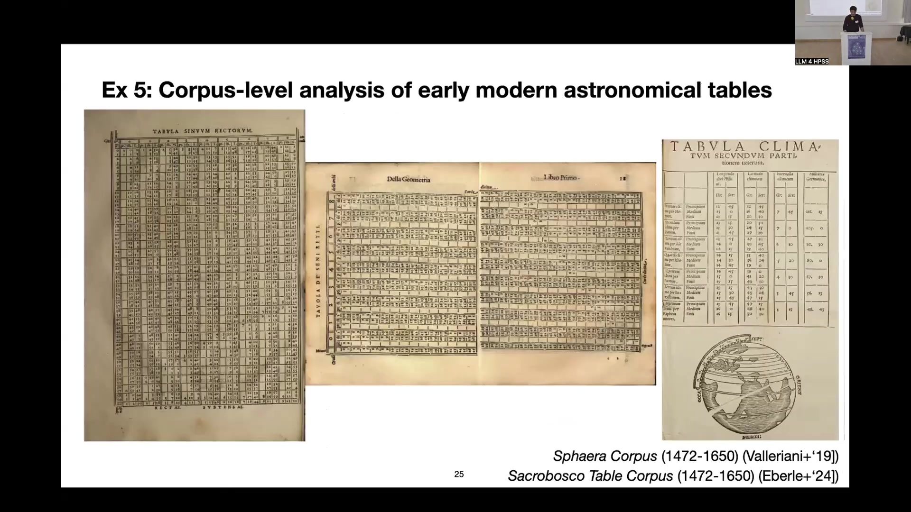
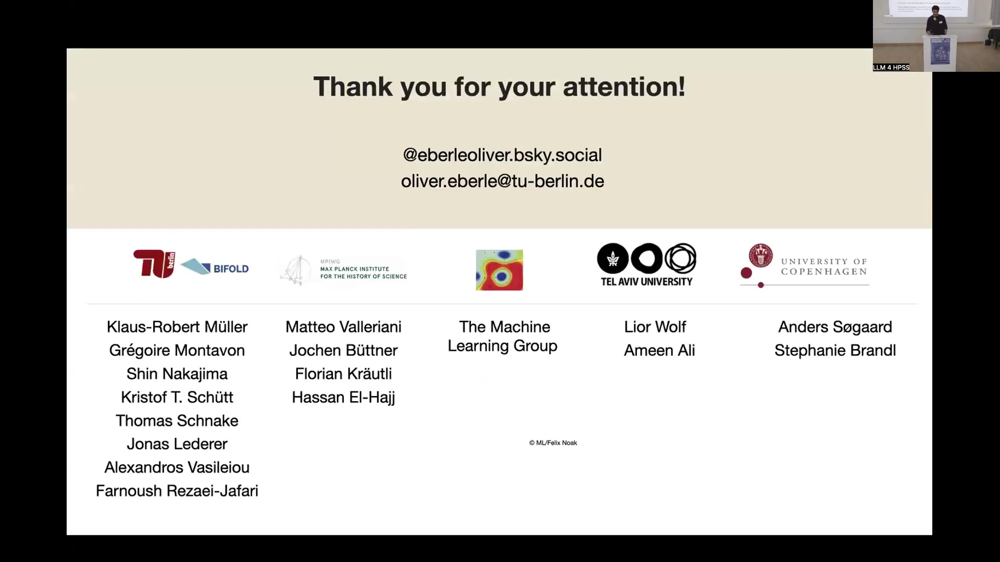

7 Explainable AI and AI-based Scientific Insights in the Humanities
Overview
This chapter explores the critical domains of Explainable AI (XAI) and the application of AI-based scientific insights within the humanities. Initially, the discourse establishes the foundational principles of XAI, particularly its evolution from feature attribution in classification models to addressing the complexities of generative AI. We underscore the necessity of understanding model predictions, identifying biases, and ensuring regulatory compliance. Furthermore, we meticulously detail various orders of interpretability, progressing from first-order attributions, such as heatmaps, to more intricate second and higher-order interactions, including those within graph structures.
Subsequently, the chapter transitions to practical applications, showcasing how these advanced AI and XAI methodologies facilitate novel research in the humanities. Specific case studies illustrate the extraction of visual definitions from historical corpora and the large-scale analysis of early modern astronomical tables. A significant workflow, termed XAI-Historian, empowers historians to generate data-driven hypotheses and discover new insights. This system employs specialised statistical models to derive bigram representations from challenging, out-of-domain historical data, enabling robust analysis. Crucially, applying cluster entropy analysis reveals patterns of innovation spread across historical European publishing centres, identifying anomalies such as the politically controlled print programme in Wittenberg. The chapter concludes by acknowledging the inherent challenges in applying AI to heterogeneous, low-resource humanities data whilst underscoring the transformative potential of multimodal approaches and explainable machine learning for scholarly inquiry.
7.1 Explainable AI (XAI) 1.0: Feature Attributions

Explainable AI (XAI) encompasses methods and approaches meticulously developed for deciphering the internal workings of highly complex machine learning models. Historically, machine learning predominantly focused on visual data; interest in language, whilst present, gained significant momentum only in recent years. Typically, a “Black Box AI System” receives an input, such as an image, and subsequently generates a prediction, for instance, identifying a “Rooster”. Crucially, users often lack insight into the underlying basis for such classifications.
To address this opacity, researchers pioneered Post-Hoc Explainability techniques. Heatmaps, for example, visually delineate the specific pixels or features that primarily contributed to a given prediction. In the rooster example, a heatmap would highlight the bird’s head, clearly indicating the model’s focus. Beyond mere transparency, the broader rationale for explainability spans several critical objectives. Firstly, XAI enables verification of predictions, ensuring the model operates logically and produces reasonable outcomes. Secondly, it facilitates the identification of flaws and biases, offering insights into how models make mistakes. Thirdly, it serves as a tool for learning about the underlying problem itself, as models occasionally uncover surprising and unconventional solutions. Finally, and increasingly vital, explainability ensures compliance with evolving legislation, such as the European AI Act. Samek et al. (2017) provided foundational work in this domain.
7.2 Generative AI and XAI 2.0 Challenges
The artificial intelligence landscape has profoundly shifted from conventional classification models to the era of Generative AI (Gen AI). These advanced models now exhibit multifaceted capabilities, encompassing not only classification but also the retrieval of similar images, the generation of novel images, and comprehensive question-and-answer functionalities across diverse topics. Consequently, grounding a prediction or an answer from a Large Language Model (LLM) system to its specific input has become considerably more challenging. Researchers are therefore exploring new directions for XAI, moving beyond simple heatmap representations to consider intricate feature interactions and adopt a more mechanistic view of model operations—that is, understanding the specific internal computations that lead to an output. These contemporary foundation models function as both multi-task and world models, offering profound insights into societal structures and the evolution of text over time.
Nevertheless, these sophisticated models can still exhibit surprising errors. A well-known example from object classification illustrates this: a standard classifier predicted a boat based on the surrounding water, a correlated and texturally simpler feature, rather than the boat itself. Lapuschkin et al. (Nat Commun ’19) documented this phenomenon. More recently, Mondal & Webb et al. (arxiv ’24) highlighted multi-step planning mistakes in LLMs. When tasked with the Tower of Hanoi puzzle, for instance, an LLM might immediately attempt to move the largest, inaccessible disc, demonstrating a fundamental misunderstanding of the problem’s physical constraints.
7.3 Structured Interpretability: First-Order Attributions

Structured interpretability extends the utility of XAI beyond basic visualisations. First-order explanations, for instance, prove particularly effective for elucidating the decisions of classification models. Researchers applied this technique to a classifier designed for historical documents, specifically aiming to distinguish various subgroups of historical tables, such as astronomical or chronological tables.
To validate the classifier’s efficacy, teams employed heatmaps, meticulously verifying that predictions relied upon genuinely meaningful features. This analysis revealed that the model correctly focused on the numerical content within the tables. This focus served as an accurate proxy for identifying numerical tables, thereby confirming the model’s meaningful operation and providing confidence in its classifications.
7.4 Structured Interpretability: Second and Higher-Order Interactions

Beyond first-order attributions, researchers have explored more complex forms of structured interpretability, notably second and higher-order interactions. Second-order features primarily focus on pairwise relationships, with similarity proving particularly important. Scientists computed a dot product from the embeddings of two entities, such as images, yielding a similarity score. Subsequently, interaction scores between specific features, like individual digits, elucidated the basis for these similarity predictions, confirming the model’s intended function.
Furthermore, in more recent work, higher-order interactions have demonstrated greater significance, particularly within graph structures. These structures might represent citation networks, intricate networks of books, or various interconnected entities. When models are trained on classification tasks within such networks, researchers find that feature subgraphs or feature walks—essentially, sets of interconnected features or paths through the graph—become collectively relevant. Identifying these complex interactions facilitates deeper insights into model behaviour, moving towards a more granular, circuit-level understanding of their internal mechanisms.
7.5 First-Order Attributions in LLMs: Biases and Long-Range Dependencies

First-order attributions offer crucial insights into the internal workings of Large Language Models (LLMs), particularly concerning biases and their handling of long-range dependencies.
7.5.1 Biased Sentiment Predictions in Transformer LLMs
Researchers investigated feature importance in LLMs by analysing how specific names influenced sentiment predictions in movie reviews, a common task within the language community. Employing heatmaps generated via a novel method tailored for Transformers, they uncovered notable biases. Male Western names, such as Lee, Barry, Raphael, or the Cohen Brothers, consistently correlated with a higher likelihood of positive sentiment predictions. Conversely, more foreign-sounding names, including Saddam, Castro, or Chan, tended to elicit negative sentiment scores. This demonstrates XAI’s considerable utility in detecting subtle, fine-grained biases embedded within these complex models, a phenomenon now widely recognised within the community. Ali et al. (ICML ‘22) detailed this work in’XAI for Transformers’.
7.5.2 First-Order Attributions for Long-Range Dependencies in LLMs
Further research explored how LLMs manage long-range dependencies, specifically when generating text summaries from extensive inputs, up to an 8,000-token context window. In a typical scenario involving Wikipedia articles, the model receives a lengthy text and then produces a summary. Analysis revealed that the model predominantly focuses on the latter portions of the provided context, prioritising information presented closer to the prompt. Whilst models can indeed draw upon long-range information from the very beginning of the context, they do so significantly less frequently, as evidenced by a log scale of token counts. Consequently, users should note that LLM-generated summaries may not provide a balanced overview of the entire input text, often emphasising more recently presented data. Jafari et al. (NeurIPS ‘24) presented these findings in’MambaLRP’.
7.6 Second & Higher-Order Interactions in Text

Exploring second and higher-order interactions offers deeper insights into how models process textual data.
7.6.1 Second-Order Interactions for Text Similarity
Consider a scenario involving a pair of sentences, processed by a sentence embedding model, such as a Bird model, to yield a similarity score. The challenge lies in comprehending the precise reasons for that score. Second-order explanations address this by providing granular interaction scores between individual tokens. Analysis of these scores frequently reveals noun matching strategies, encompassing both synonyms and identical noun tokens, alongside interactions involving separators and other token types. This suggests that whilst models compress vast amounts of information, they often rely on surprisingly simplistic underlying strategies to achieve their similarity predictions.
7.6.2 Graph Neural Networks for Structured Predictions
Graph Neural Networks (GNNs) offer a powerful framework for structured predictions, providing attributions in terms of “walks” that represent complex feature interactions. Intriguingly, GNNs, which inherently encode structural information, can be conceptualised as LLMs, given that their attention networks facilitate token message passing. This connection enables their application to the analysis of language structure.
7.6.3 Interaction of Nodes Learns Complex Language Structure
Researchers demonstrated this by training a GNN (or an LLM) on a movie review sentiment task, leveraging the hierarchical structure inherent in natural language. They then extracted “walks” to understand the model’s decision-making. First-order attributions proved insufficient, failing to capture the nuanced complexity of language; for instance, the phrase “first I didn’t like the boring pictures” might receive a high positive score solely due to the presence of “like,” neglecting the crucial negation. In stark contrast, higher-order explanations accurately assigned a negative score to the entire negative sentence and correctly captured the hierarchical structure of the subsequent positive statement. Schnake et al. (TPAMI ‘22) published this work in’Higher-Order Explanations of Graph Neural Networks via Relevant Walks’.
7.7 AI-based Scientific Insights in the Humanities

AI-based methodologies offer transformative potential for scientific insights within the humanities, as demonstrated through several compelling examples.
7.7.1 Extracting Visual Definitions from Corpora
Researchers embarked on a project to extract visual definitions from a corpus of mathematical instruments. Their objective involved classifying these instruments, distinguishing, for instance, between a machine and a purely mathematical instrument. Employing heatmap-based approaches for visual definitions, the team collaborated closely with historians, including Matteo Valeriani and Jochen Büttner. These domain experts provided crucial guidance and meticulously verified the definitions derived from the models. The analysis revealed that fine-grained scales present on the mathematical instruments proved highly relevant for the model’s classification decisions. El-Hajj & Eberle+ (Int J Digit Humanities ’23) published this work on explainability and transparency in digital humanities.
7.7.2 Corpus-Level Analysis of Early Modern Astronomical Tables
A larger collaborative project focused on the corpus-level analysis of early modern astronomical tables. This initiative involved the Sphaera Corpus (1472-1650) and the Sacrobosco Table Corpus (1472-1650), collectively comprising 76,000 pages of university textbooks. Historically, these tables, vital carriers of scientific knowledge and indicators of mathematisation processes, had never been analysed at scale. This challenge arose from the data’s extreme heterogeneity, limited annotations, and the inadequacy of conventional Optical Character Recognition (OCR) and foundation models. The primary objective was to develop an automated method for matching tables with similar semantics. Valeriani et al. (2019) and Eberle et al. (2024) detail the foundational corpora.
7.7.3 Historical Insights at Scale: XAI-Historian Workflow
To address these challenges, researchers developed a comprehensive workflow designed to empower historians with insights at scale, coining the term XAI-Historian. This concept envisions a historian leveraging AI and explainable AI to generate data-driven hypotheses and uncover new case studies. The workflow encompasses three key stages: initial data collections from images of books, followed by an atomisation-recomposition phase involving input tables, bigram maps, and histograms, culminating in corpus-level analysis through historical table embedding and data similarity. Rather than relying on general foundation models, which proved ineffective on this out-of-domain historical data, a specialised statistical model was crafted to detect bigrams. This bespoke model’s reliability was rigorously verified by confirming consistent bigram detection, such as “38” across two distinct inputs, thereby establishing trust in its decisions. Eberle et al. (Sci Adv ’24) and Eberle et al. (TPAMI ’22) document this pioneering work.
7.7.4 Cluster Entropy Analysis to Investigate Innovation
Building upon these capabilities, researchers employed cluster entropy analysis to investigate the spread of innovation across European publishing centres during the early modern period. Focusing on the output of specific cities within the Sphaera publication (EPISD-626), they quantified the diversity of each city’s print programme using entropy. A low entropy score indicated a tendency to reproduce identical content, whilst a higher score signified a more diverse programme. This approach, utilising model representations for distance-based clustering and entropy calculation, enabled large-scale analysis previously unattainable. The analysis identified two particularly interesting cases: Frankfurt/Main, which exhibited the lowest entropy, confirming its established reputation as a centre for reprinting editions; and Wittenberg, also displaying remarkably low entropy. This latter finding revealed a historical anomaly: the political control exerted by the Protestant reformers, notably Melanchthon, actively limited the print programme and curriculum, a discovery that aligned perfectly with existing historical intuition and scholarly support. Eberle et al. (Sci Adv ’24) further elaborates on these findings.
7.8 Conclusion: AI-based Methods for the Humanities

Humanities and Digital Humanities (DH) research has historically concentrated on the digitisation of source material. Nevertheless, automated analyses of these digitised corpora present significant challenges, primarily owing to their inherent heterogeneity and the scarcity of annotated labels.
Despite these hurdles, multimodality, advanced Machine Learning (ML), and Explainable AI (XAI) collectively offer substantial potential to scale humanities research and foster entirely novel research directions. This chapter has demonstrated how XAI can provide crucial insights into model behaviour, from understanding feature attributions in classification to unravelling complex interactions in LLMs. Furthermore, we have showcased the transformative power of AI-based methodologies, such as the XAI-Historian workflow and cluster entropy analysis, in enabling large-scale historical inquiry and uncovering previously hidden patterns of innovation.
Foundation Models and Large Language Models (LLMs), coupled with effective prompting strategies, can automate various intermediate tasks, including labelling, data curation, and error correction. However, their utility remains limited when addressing more complex research questions that require deep domain expertise and nuanced interpretation.
Significant challenges persist, particularly concerning low-resource data, which acts as a considerable roadblock, impacting the applicability of scaling laws. Moreover, out-of-domain transfer, especially for historical and small-scale datasets, necessitates rigorous evaluation and often bespoke model development. Current LLM training and alignment predominantly focus on natural language tasks and code generation, underscoring the need for specialised approaches when engaging with the unique characteristics of humanities data. Future work should focus on developing more robust methods for handling data scarcity and heterogeneity, alongside fostering deeper interdisciplinary collaboration to ensure AI tools truly serve the complex needs of humanities scholarship. ```